Continuando no caminho para São Thomé das Letras, saímos da RJ-151 depois de Visconde de Mauá e seguimos por estradas de chão Minas Gerais adentro. De início pegamos ruas de terra batida, e era possível manter um ritmo bom. Mas aos poucos, quando mais longe do asfalto, e com menos casas, mais as ruas de terra viravam um offroad com nível de dificuldade crescente.
Início do Off Road
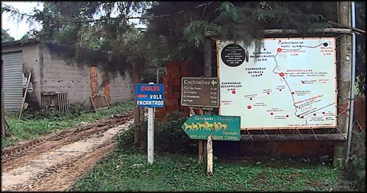Começo das estradas de terra.
Eu já tenho uma boa prática para pilotar fora de estrada e em terrenos difíceis e enlameados, mesmo sem estar com a moto adequada e pneus próprios para lama. Mas com a moto carregada com alforges e garupa, era a primeira experiência. E estava bem complicado, cansativo. Mas nada impossível, vamos embora.
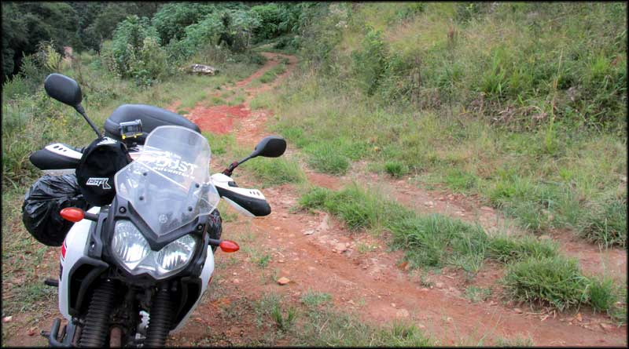Trilha até Alagoa
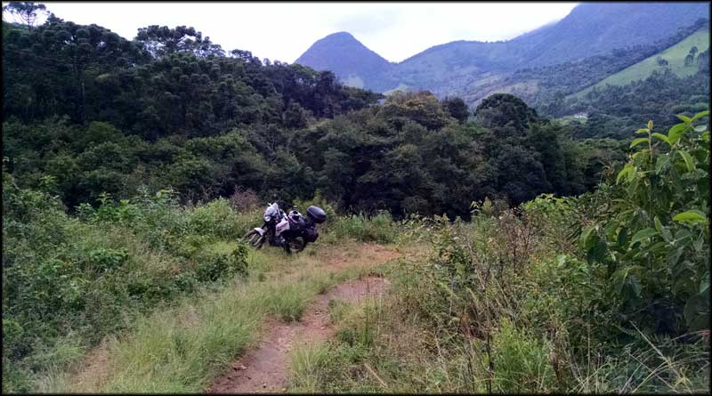Estradas de terra que já sumiam no meio do matagal
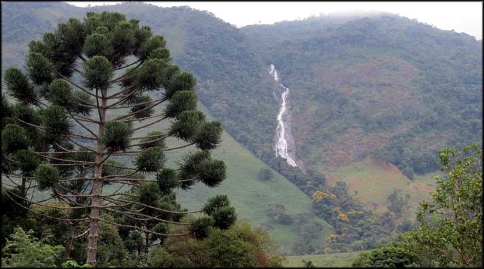Mas o trajeto difícil guardava belos visuais
Após um bom tempo, perdidos em bifurcações sem indicações, errando caminhos e tendo que voltar em ruas que não davam em lugar algum, conseguimos chegar na cidade de Alagoa. Lá, parei para pedir informações a um rapaz que estava sentado em frente de sua casa.
Ele disse que para ir para Aiuroca, poderia pegar um caminho que chegaria na estrada asfaltada. Perguntei se havia outra opção, alguma estrada por dentro da mata, e ele disse que havia a utilizada por moradores, que era um caminho mais curto até, pelo que me lembro, mas que não sabia as condições do barro após as últimas chuvas.
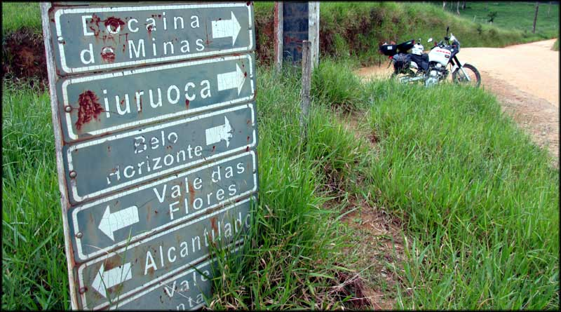Bifurcação nas estradas de terra entre cidades
Já eram quase 18:00, mas estava bem claro. Claro, vamos continuar no offroad!
Ascensão e Queda
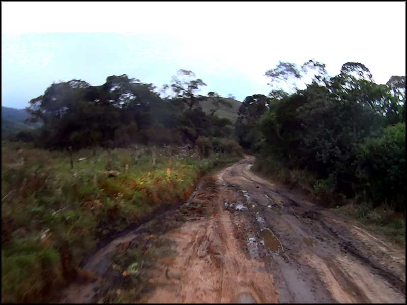Várias vezes a estrada de terra virava estrada de lama...
As novas ruas de chão porém foram um desafio bem maior que o esperado. Muitas subidas íngremes, muitas valas cavadas pela água das chuvas, muitas pedras soltas, pedras grandes. Foi escurecendo, conforme avançamos pela mata com árvores gigantes, que obstruíam a já fraca luz natural, e em momentos parecia noite. O cansaço batia, o peso da moto já era um problema.
E numa dessas subidas íngremes, a roda da frente desviou em uma enorme pedra solta, e não tive força para dominar a moto. Só consegui direcionar para um barranco, onde tentei escorar para não cair. Mas não foi suficiente e acabamos caindo.
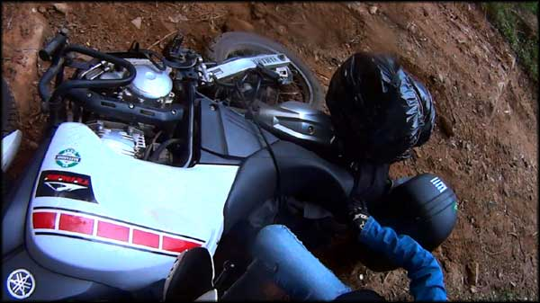Subida íngreme, barro molhado e chão
Levantei preocupado, apesar da queda ter sido devagar. Demorei um tempo até conseguir soltar meu pé, que ficou preso debaixo da moto. Os alforges ajudaram, sustentando um pouco do peso da máquina. Não nos machucamos, e passado o susto começamos a rir da maluquice. Longe de qualquer civilização, sem sinal de celular, imagina o problema para conseguir ajuda.
Levantei a moto com dificuldade na ladeira de barro, esperei um pouco para o óleo assentar no motor, e dei partida. Ligou, tudo certo. Coloca o capacete e vamos continuar.
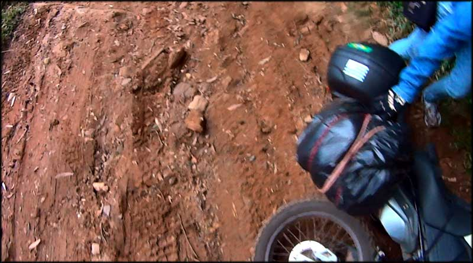Levantar a moto na ladeira escorregadia exigiu paciência...
Seguimos num ritmo mais lento, agora sim, já era noite, e a visibilidade não era boa, muitas pedras, valas, buracos e ladeiras escorregadias. Chegamos em uma região de fazendas, desviando de vacas que pastavam na beira da rua. E finalmente chegamos em Aiuroca, às 20:00 e pouco.
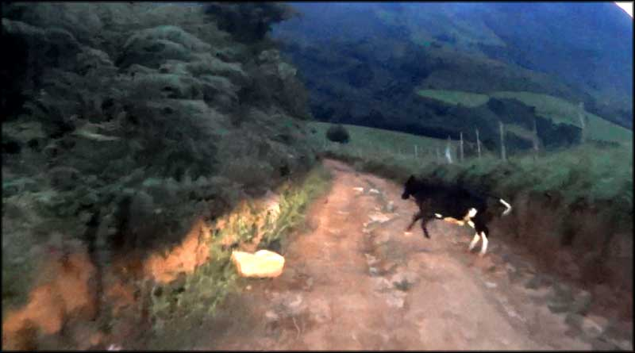Xô boi...
Sem almoço, paramos em um pequeno armazém. Os salgados na estufa não inspiraram confiança. O jeito foi comprar um saco de biscoito de polvilho e um refrigerante, e dar-se por satisfeito.
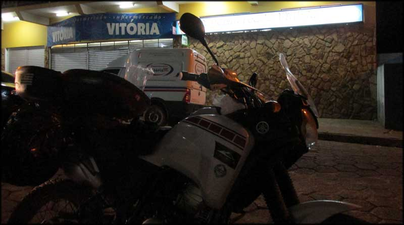Parada para almoço, lanche, descanso, tudo. Ou nada.
Após o farto almoço da noite, seguimos para a Rodovia Vital Brasil, chequei no GPS do celular, que já funcionava, e pegamos à esquerda sentido Cruzília. Parei para abastecer nesta cidade, e pegamos informações com os frentistas, sobre como chegar em São Thomé das Letras. Descobri então que mais um bom trecho de ruas sem asfalto nos aguardava, e já cansado de excesso de aventura no dia, torcia para que a rua estivesse em boas condições.
Estava, mas não toda. Havia hora em que era possível ir a 80km/h, mas de repente começavam pedaços com muitas pedras soltas, onde tinha que reduzir o ritmo e seguir a 40km/h ou menos, com alguns sustos em derrapagens não esperadas, para animar e não deixar ficar com sono.
Enfim, São Thomé das Letras
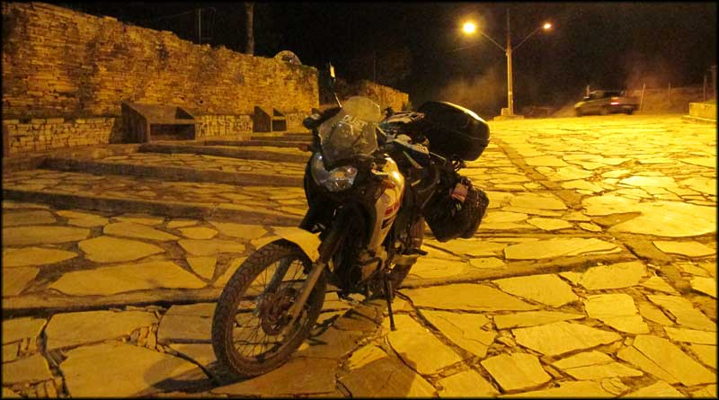Chegando em São Thomé das Letras, finalmente.
Logo no início da cidadela, demos de cara com um mercadinho. Entrei e já sorri ao ver uma bela geladeira com cerveja gelada. Agora sim, comemorar as aventuras do trajeto, e começar o passeio pela cidade.
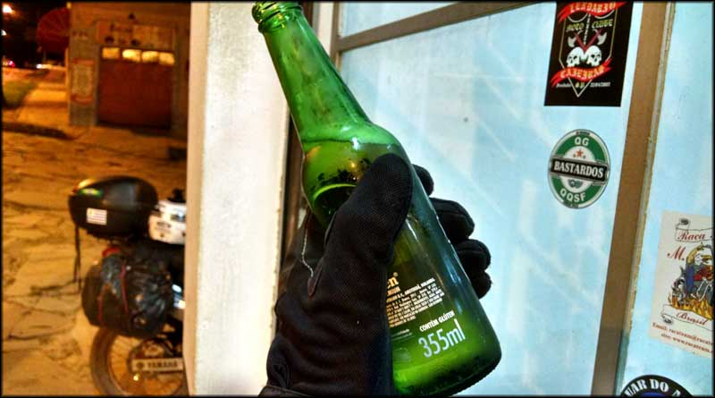Recompensa pelo esforço da aventura.
Após a merecida cerveja gelada, que na verdade foram duas, voltamos para a moto. A missão agora era descobrir onde ficava a pousada. Nem sabia por onde começar. Virei na primeira rua à esquerda, e estávamos em frente a bendita Pousada Souza Reis. Finalmente uma coisa fácil de fazer.
Na recepção, cansados, fomos recebidos por uma moça. Nem mal humorada, nem simpática. Indiferente, diria, e de poucas palavras. Pegamos a chave do quarto e subimos. Era um quarto simples, com uma cama simples, banheiro simples, mas tudo limpinho. E tinha uma geladeira, que seria útil para as próximas cervejas.
Um banho rápido para tirar a lama da cara, e saímos a pé em direção ao centro, na esperança de encontrar algum lugar para jantar, afinal só havíamos comido durante o dia uns biscoitos de polvilho, ou seja, coisa alguma.
À noite já estava bastante frio, muito bom. Passamos por alguns bares, cidade cheia, galera conversando, bebendo e ouvindo música. Eu devoraria um panelão de feijoada, mas como já estava tarde, resolvemos comer uma pizza no restaurante O Alquimista, bem em frente à praça de São Thomé das Letras. Estava muito boa e o preço foi justo.
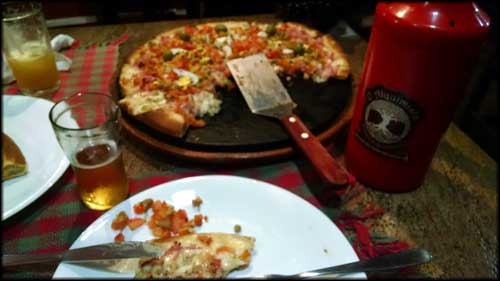Pizza no restaurante O Alquimista, gostei da massa.
Após a janta, bateu o cansaço pela longa e acidentada viagem de ida. Após andar um pouco pelas ruas e ver como eram os outros bares, voltamos para a pousada para descansar. No dia seguinte queríamos aproveitar as cachoeiras da região.
Continua no próximo artigo… Passeio em São Thomé das Letras parte 3.